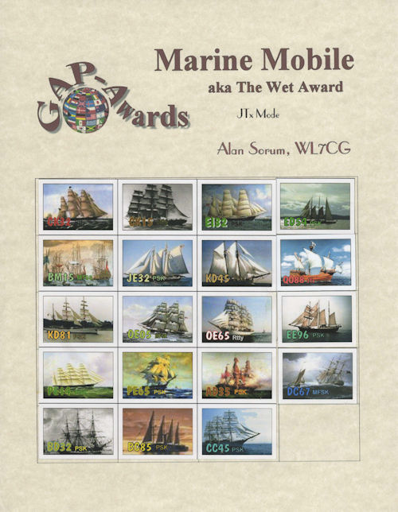

| GAP Awards Paper Certificates Family Tree |
| Index | Grid Index |
| You can claim
this collectors sheet after your first confirmed stamp. This is the Marine Mobile or better known as the WET Award Collectors sheet. Take your time with this one, it is very difficult but it pays off off in satisfaction when you manage to get a few Stamps collected. |
|  |
| To claim the Pinnacle WET
award, the NEPTUNE Award, it is available to anyone confirming all 20 WET (Marine Mobile) Grid Squares. Wet Award endorsements are available in the following increments. First 4 Stamps in increments of 5, next 5 in increments of 10, then 5 in increments of 50, and the last 4 in increments of 100. These awards are offered in different modes each being shown on the endorsement BAR or stamp. If you ask to have your Collectors sheet declared in a single mode we can do that, but made sure all your stickers are that same mode. |